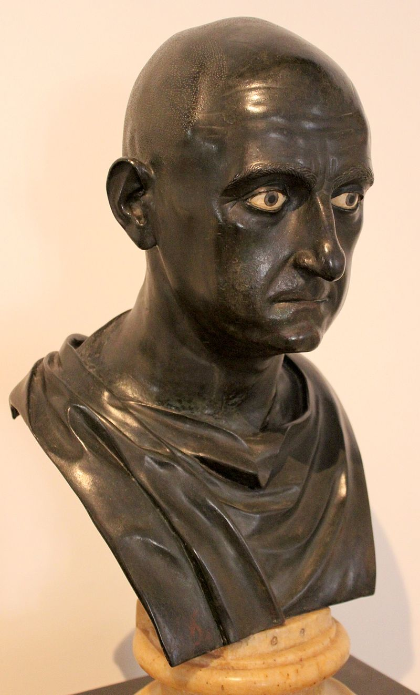
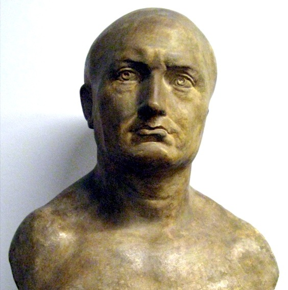

Scipio Africanus the Elder
Roman bronze bust of an unknown man, traditionally identified as Scipio Africanus the Elder from the Naples National Archaeological Museum (Inv. No. 5634), dated to mid 1st century BC. Excavated from the Villa of the Papyri at Herculaneum by Karl Jakob Weber, 1750–65.
https://en.wikipedia.org/wiki/Ancient_Rome#/media/File:Escipi%C3%B3n_africano.JPG
 